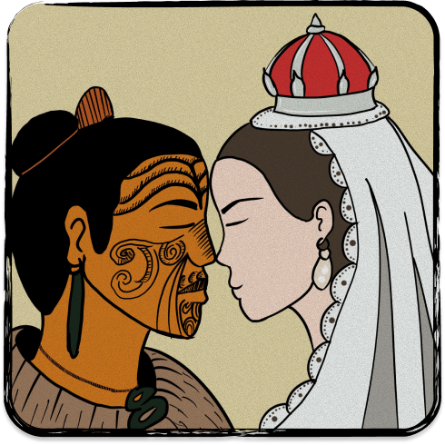

By: Justin D. Grumal, Lois Dara D. Sanglap, Dustin Dwayne N. Diaz
Matewareware.nz is a web application published in 2021, developed by researchers from the University of Auckland and AUT (Beston, 2021).
It was made to support whānau
navigate the journey of mate wareware with confidence and aroha, destigmatising the condition.
1.
Learn and understand mate wareware within the māori worldview
2.
Destigmatise mate wareware
3.
Spread awareness on how to prevent and reduce the risk of mate wareware

kaumātua were interviewed
focus groups in
locations
The Tohunga Suppression Act 1907 criminalized traditional healing; this app counters that legacy by reclaiming and centering Māori understandings of wellbeing and mate wareware (New Zealand Legislation, 2026).
Safeguards whānau wellbeing by providing health information that is culturally appropriate, ensuring Māori are not forced to navigate systems that ignore their reo or tikanga.
Historical policies have consequently created long-term disparities in health and resource access. By providing a culturally grounded digital tool, matewareware.nz actively works to close those gaps and provide the protection of wellbeing guaranteed under Te Tiriti.
Article 2's messaging is prominent in how matewareware.nz is presented from a Māori worldview, as a dedicated web application was developed to safegaurd Māori authority, autonomy, & stewardship over the portrayal of mate wareware. The web application reflects the Māori understanding of health, ensuring Māori perspectives are embedded in how the information is conveyed.
Matewareware.nz is relevant to the IT industry, specifically ICT (Information Communication Technology), due to how it conveys information about dementia, by making a website dedicated to mate warware.
A website is very accessible since approximately 96% of New Zealand's population has access to the internet; therefore, information regarding mate wareware can be readily found online (Kemp, 2025).
Due to the simplicity in access, it results in aiding Māori whānau, particularly for those who may face low health literacy,
financial challenges, or limited access to services (remote living).
<!DOCTYPE html>
<html lang="en-NZ">
<head>
<meta charset="UTF-8">
<meta name="viewport" content="width=device-width, initial-scale=1.0">
<title>Developers Perspective</title>
</head>
<body>
<!-- Value 1 -->
<h1>Mātauranga Māori</h1>
<!-- Meaning -->
<ul>
<li>Māori knowledge systems</li>
<li>Traditional ways of knowing</li>
<li>Cultural wisdom</li>
</ul>
<!-- Value 2 -->
<h1>Kotahitanga</h1>
<!-- Meaning -->
<ul>
<li>Unity</li>
<li>Collective Action</li>
<li>Moving in unison with a shared purpose</li>
</ul>
<h1>The values influence</h1>
<p>These values replaced standard clinical models with a collaborative co-design approach. By merging Kotahitanga and Mātauranga, developers built the app from a Māori worldview, ensuring cultural authenticity and collective community needs remained the absolute priority.</p>
</body>
</html>
These values transform the user experience into a secure, relational whānau journey. Kaitiakitanga ensures health data is protected as a sacred taonga, while Whānaungatanga fosters connection, encouraging families to use the tool together to share the responsibility of care.